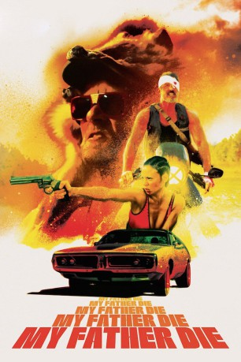

#6100 My Father Die
 
 IMDB-Wertung: 5.7 / 10
IMDB-Wertung: 5.7 / 10  Metascore: 0
Metascore: 0 
Deaf and mute since having his hearing knocked out at the age of 12, Asher has been training for almost two decades to avenge himself on Ivan, the man that killed his older brother, 21 years ago. And now that his nemesis is out of prison, he gets his chance. But Asher's target also happens to be his father.
Jahr: 2016
Dauer: 90 Minuten
FSK: 16
Land: USA Studio: FilmRiseTonspuren: DTS - ,
Untertitel: Deutsch, Englisch,
Auflösung: 1080p (1920x720) Größe: 5345 MB
Genre: Action, Drama
Regisseur: Sean Brosnan
Drehbuch: Mary Shelley
Soundtrack:
Darsteller:
Datei: X:\2016(G-M)\My Father Die (2016, FSK16, 1920x720).mkv seit 01.05.2017
Festplatte: HD 2016(A-Z)
 Es gibt insgesamt 164 Filme in der Gruppe '2016(G-M)'
Es gibt insgesamt 164 Filme in der Gruppe '2016(G-M)'